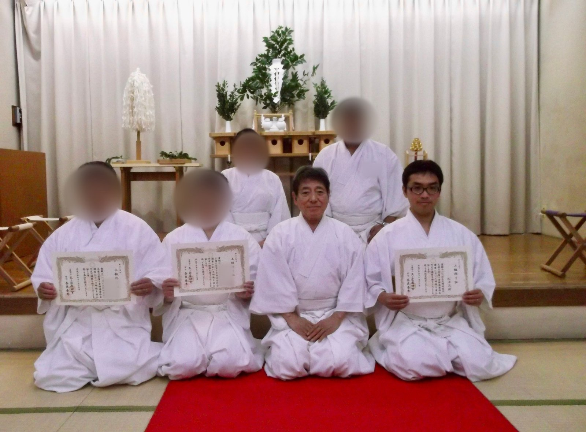
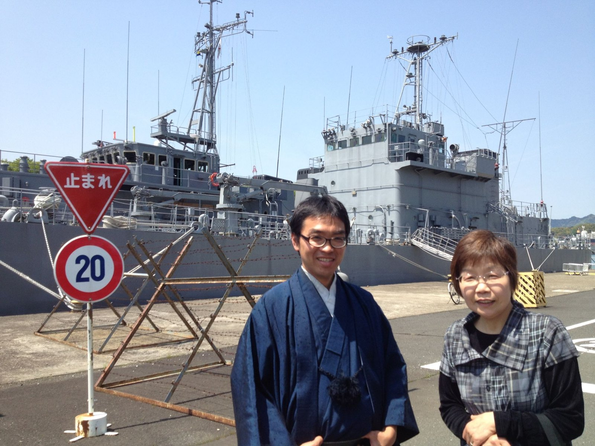
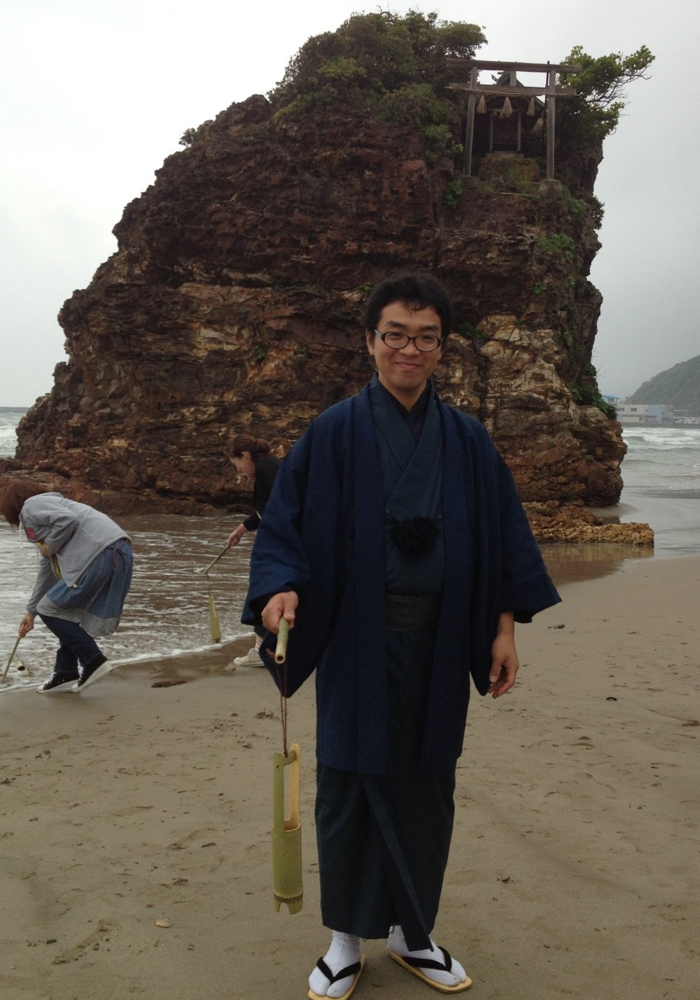
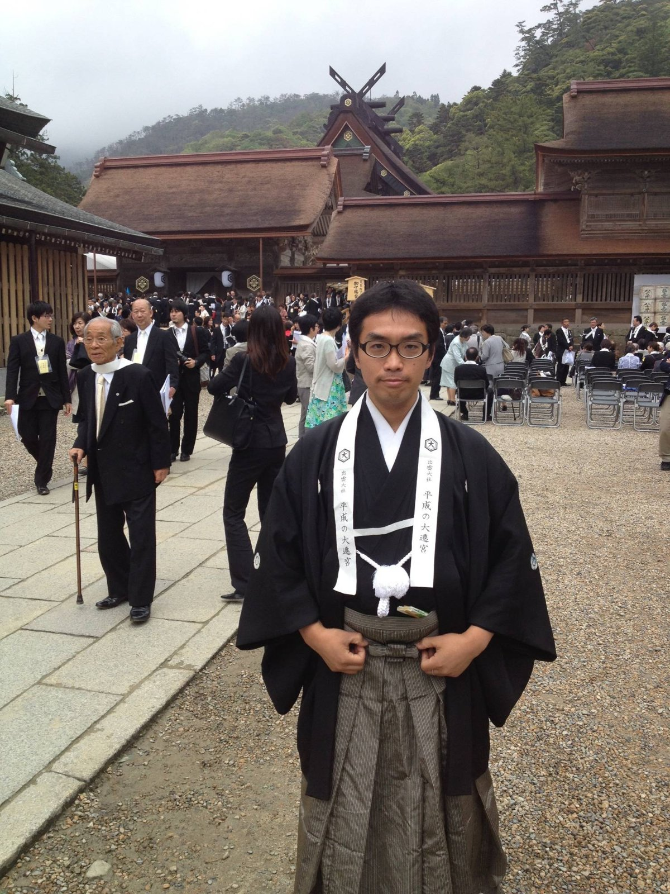
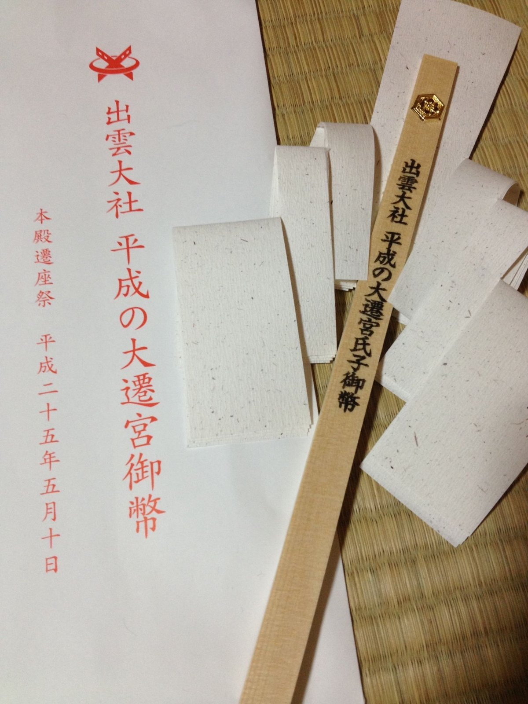

もう１０何年前の事でしょうか。
ある知り合いの方から、こんなアドバイスというか、お言葉を頂きました。
その方が、なかなか遠くて行けない伊勢の神宮で御垣内参拝した直後のことでした。
私はそれを神啓だと受け止めました。
とはいえその方法が分からず、ある神社を訪ねました。
うちは受け入れられない。ならば他にありますか？と尋ねると、市内の別の神社の名が挙がりました。
それなら、とその神社にうかがいました。
すると、「◯◯さんから、『変な人が来た』と言われた。」との事。
そして、やはり受け入れられない、と。
その事を例の方に伝えると「なぜ『何がなんでも』と思わないのか？表がダメなら裏がないか、とか」と、なぜか叱られてしまったのでした。
神社神道以外に道があるとは、知らないですもん笑
すると、困り果てていた私の話を聞いて、ある先達が、「知り合いで神職を養成している人がいるよ」と紹介してくださったのが、当時にっぽん文明研究所として神籬磐座祭祀を中心とする神職養成をされていた私の師、奈良泰秀先生でした。
奈良先生に少人数の寺子屋方式で学び、全ての課程を修了。神職資格を頂きました。神道神祇本廳への組織改変に伴い、そのタイミングで資格証も再発行して頂きました。

「神官の道」を肚に決めた時、それは故郷出雲大社の遷宮直前のことでした。
遷宮に合わせて産土神である大國主大神様へ奉告しようと、帰郷する道中、一緒に車に乗っていた母が突然「親戚に出雲大社の神主さんがおる」と話し始めました。そんな話、生まれて３６年、初めて知りました。

このタイミングで聞かされるとは、御神意なのだろうと思い、「神官の道」についての話をしました。
すると母は、「じゃあ帰ったらその人に会いに行こう」とその方のところに連れて行ってくれました。
その方は脳梗塞を患い、五十音の文字盤を奥様が動かして、文字を指さす形でしかコミュニケーションが取れなくなっていました。
出雲大社には大社國學館という神主養成校があり、神主として奉仕するとともにそちらでも教鞭を取られていたのだそうです。
私が決意を伝えると、目に涙をいっぱいに浮かべて喜んでくださいました。なぜなら息子さんは別の道に進み、家で神主をつとめる人間が居なくなってしまっていたからでした。



思えば不思議なものです。
最初に興味をもったのは、伊勢の神主一族であった出口延佳の残した言葉、文でした。その彼は、神主であり、同時に門人に神道を教える教育者でもありました。
そして、出雲に生まれた私が３６年の人生を経て神主の道を産土の神に伝える時、その家系が出雲大社に神主として仕えていた、しかも延佳神主同様に、神道を教えてもいた。
そんな私が、神道についての私塾を開いた。